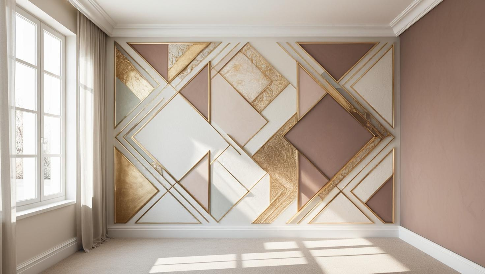

İstanbul Ataşehir Profesyonel Boya Ustası
Ataşehir'deki rezidans ve site dairelerinde, plaza ofislerinde ve eski apartmanlarda daire, ofis ve bina boyama işlerini 20 yıllık tecrübemizle yürütüyoruz. Keşfi adresinizde ücretsiz yapıyor, teklifi yazılı veriyoruz.
Ataşehir'de Boya Badana: Rezidans, Ofis ve Site Çalışma Düzeni
Ataşehir boyacı talebinin ayırt edici tarafı yapı tipi değil, çalışma düzeni. İlçe ağırlıklı olarak yeni ve yüksek katlı konut ile ofis stoğundan oluşuyor; Batı Ataşehir ve Finans Merkezi çevresinde rezidans ve plaza, Barbaros ve Küçükbakkalköy hattında site içi konut yoğunluğu var.
Bu yapı tipinde duvar yüzeyi genellikle düzgün olduğu için ağır raspa ve tamirat nadiren gerekiyor; iş astar ve kat uygulamasına odaklanıyor. Buna karşılık işin planını belirleyen başka kalemler devreye giriyor: site ve bina yönetiminin izni, yük asansörü rezervasyonu, çalışma saatleri kısıtı ve yüksek katlara malzeme taşıma.
Ataşehir boya ustası olarak ofis ve plaza katlarında da çalışıyoruz. Ofislerde çalışmayı mesai dışına ve hafta sonuna alıyor, bölüm bölüm ilerleyerek ekibin çalışmaya devam edebilmesini sağlıyoruz.
Rezidans dairelerinde eşyalı çalışma standart; parke ve cam yüzeylerin korunması işin ayrı bir kalemi olarak planlanıyor.
Hizmetlerimiz

İç Mekan Boyama
Ataşehir'de daire boyamada rezidans ile eski apartman arasındaki fark keşifte hemen görülür. Yenisahra ve Esatpaşa gibi eski yerleşim mahallelerinde duvarlar çoğu zaman alçı ve sıva tamiri ister; site dairelerinde ise öncelik, mutfak ve salon gibi yoğun kullanılan duvarlar için silinebilir boya seçmektir.
- Rezidans ve site dairesi boyama
- Eski dairede alçı ve sıva tamiri
- Mutfak ve salonda silinebilir boya
- Parke, cam ve mobilya koruması

Dış Cephe Boyama
Ataşehir'de dış cephe boyası çoğunlukla bir site bloğunun ya da apartmanın tamamını kapsayan ve kat maliklerinin ortak kararıyla başlayan bir bina boyama işidir. Blok yüksekliği, cephedeki çatlaklar ve iskelenin kurulacağı alan teklifin ana kalemlerini belirler.
- Site blokları için bina boyama
- Cephe çatlağı ve sıva onarımı
- Blok yüksekliğine göre iskele planı
- Balkon ve parapet yüzeyleri

Dekoratif Boyama
Dekoratif boya, rezidans salonunda ya da ofis girişinde tek bir vurgu duvarında kullanıldığında mekânı yormadan karakter katar. Doku ve rengi, duvarın aldığı gün ışığını ve mobilya tonlarını yerinde görerek birlikte seçiyoruz.
- Salon ve antrede vurgu duvarı
- Ofis girişinde kurumsal renk
- Taş ve tuğla efektli dekoratif boya
- Kapı ve kartonpiyer boyama
Fiyat Tablosu
| Hizmet Türü | Metrekare Fiyatı | Ortalama Süre (100m²) | Garanti |
|---|---|---|---|
| İç Cephe Boyama | 100-200 TL | 2-3 Gün | Uygulama kapsamına göre |
| Dış Cephe Boyama | 180-280 TL | 3-5 Gün | Uygulama kapsamına göre |
| Dekoratif Boyama | 250-500 TL | 4-7 Gün | Uygulama kapsamına göre |
| Ofis Boyama | 150-250 TL | 2-4 Gün | Uygulama kapsamına göre |
Metrekare fiyatları yaklaşık ön değerlendirme aralığıdır. Uygulanacak ölçüm yöntemi, boyanacak alanın kapsamı, yüzey durumu, tamirat ihtiyacı, kat sayısı ve malzeme seçimi keşif sırasında netleştirilir.
Dış cephe boya fiyatları uygulama alanı için yaklaşık 180–280 TL/m² aralığındadır. Kesin hesaplama yöntemi ve teklif; yüzey durumu, bina yüksekliği, erişim veya iskele ihtiyacı, tamirat kapsamı, boya sistemi ve uygulanacak kat sayısına göre keşif sırasında netleştirilir.
Uygulama kapsamına göre işçilik garantisi sağlanır. Garanti kapsamı ve istisnaları teklif veya iş sözleşmesinde belirtilir.
Bu rakamlar İstanbul Boyacılık'ın 2026 gösterge fiyat aralığıdır. Bir piyasa ortalaması değildir. Kesin fiyat; yüzey durumu, hazırlık ve tamirat miktarı, uygulanacak kat sayısı, seçilen malzeme sınıfı, ulaşım ve kat koşulları ile evin eşyalı mı boş mu olduğu keşifte görüldükten sonra belirlenir.
Ataşehir'de yüzey hazırlığı çoğu işte sınırlı kalıyor. Aralığın üst tarafına çıkaran şey genellikle duvarın durumu değil, çalışma düzeni oluyor: mesai dışı ve hafta sonu çalışma, yük asansörü ve kat kısıtı, yüksek kata malzeme taşıma ve eşyalı rezidansta koruma işi.
Ataşehir'de Bina Boyama: Site Bloklarında Karar, İskele ve Fiyat
Ataşehir'de bina boyama tek bir daireyi değil bütün bloğu ilgilendirir; bu yüzden iş, yönetimin kararı ve cepheye göre planlanan erişimle başlar.
Dış cephe boyası için site yönetimi konuyu genellikle kat malikleri kurulunun gündemine taşır; kararın nasıl alınacağını yönetim planı belirler. Birden fazla bloğu olan sitelerde blokların aynı dönemde mi sırayla mı boyanacağı da bu aşamada konuşulur; sıralı çalışma sakinlerin günlük düzenini daha az etkiler.
- Erişim: Yüksek bloklarda cephenin tamamına nasıl ulaşılacağı ve iskelenin nereye kurulacağı keşifte belirlenir. Kurulum site sınırının dışına, örneğin kaldırıma taşıyorsa ilgili belediyeden izin alınması gerekebilir.
- Yüzey: Cephedeki kılcal çatlaklar, gevşemiş sıva ve varsa mantolama yüzeyinin durumu uygulanacak dış cephe boya sistemini belirler.
- Fiyat: Gösterge aralık fiyat tablosunun dış cephe satırında yer alır; kalemlerin nasıl hesaplandığını dış cephe boyama fiyatları rehberimizde bulabilirsiniz.
Yenisahra ve Esatpaşa'daki Eski Apartman Dairelerinde Boya Hazırlığı
Ataşehir'in yerleşimi daha eski mahallelerinde daire boyamanın kapsamını boyadan çok yüzey hazırlığı belirler.
Yenisahra ve Esatpaşa'da eski apartmanlar ve kooperatif blokları bulunur; bunların bir kısmı kentsel dönüşüm gündemindedir. Bu dairelerde üst üste sürülmüş eski boya katmanları, kapı ve pencere kenarlarındaki çatlaklar ve banyo ile mutfak duvarlarındaki nem izleri boyadan önce ayrıca ele alınır.
- Kabaran ya da tozuyan eski boya kazınır; yüzey, tozumayı bağlayan bir astarla sağlamlaştırılır.
- Derin çatlak ve oyuklar alçıyla, ince çizik ve delikler macunla kapatılır.
- Nem izi varsa önce kaynağı konuşulur; kaynağı çözülmemiş leke boyayla kalıcı olarak kapanmaz.
Hazırlık ve malzeme kalemlerinin toplam maliyete etkisini 2026 boya badana fiyatları rehberindeki faktörlerle karşılaştırabilirsiniz.
Plaza Ofislerinde Alçıpan Bölme ve Koridor Boyası
Ataşehir'deki plaza ofislerinde çalışma alanları çoğu zaman alçıpan bölmelerle ayrılır; boyanın düzgün görünmesi derzlerin, darbe izlerinin ve eski montaj deliklerinin kapatılmasına bağlıdır.
Ofis yerleşimi değiştikçe duvarlarda eski priz, pano ve kablo kanalı izleri kalır. Bu noktalar boyadan önce macunlanıp zımparalanmazsa son katta gölge gibi görünür. Koridor ve bekleme alanı gibi sık temas edilen yüzeylerde silinebilir boya, ekran karşısındaki duvarlarda ise ışığı yansıtmayan mat yüzey daha rahat bir sonuç verir.
Kurumsal kimliğinizde tanımlı bir renk kodu varsa keşifte paylaşın; böylece aynı ton farklı katlarda ve sonraki rötuşlarda tutarlı kalır. Farklı ilçelerdeki şubeleriniz için de İstanbul genelinde profesyonel boya badana desteği alabilirsiniz.
Ataşehir’de Hizmet Verdiğimiz Mahalleler
Ataşehir Mahalleleri
- Aşık Veysel Mahallesi
- Atatürk Mahallesi
- Barbaros Mahallesi
- Esatpaşa Mahallesi
- Ferhatpaşa Mahallesi
- Fetih Mahallesi
- İçerenköy Mahallesi
- İnönü Mahallesi
- Kayışdağı Mahallesi
- Küçükbakkalköy Mahallesi
- Mevlana Mahallesi
- Mimar Sinan Mahallesi
- Mustafa Kemal Mahallesi
- Örnek Mahallesi
- Yeni Çamlıca Mahallesi
- Yenisahra Mahallesi
- Yenişehir Mahallesi
Google Haritalar'daki Müşteri Yorumlarımız
Yorumlar, İstanbul Boyacılık'ın Google Haritalar işletme profilinden olduğu gibi alınmıştır. Ataşehir dahil İstanbul genelindeki işlerimize ait yorumların tamamını Google Haritalar profilimizde okuyabilirsiniz.
"Enes beye çok tşk ettim yönlendirigi ustalar gayet güzel işçilik yaptılar poşet olsun süpürgelik üstüne band olsun hepsini yaptılar ve işin sonu mükemmel hiç kirletme olmadı gönül rahatlığıyla tavsiye ediyorum tekrardan çok teşekkürler ediyorum gayet memnun kaldım"
Mehmet Çevik
Google Haritalar yorumu
"Baran ustadan çok memnun kaldık, ellerine emeğine sağlık hakkını helal etsin. Temizliğe özene çok dikkat eden ince işçilik çalışan birisi. Mutlaka çevreme de önereceğim kendisini. 🙏"
Yaren Sert
Google Haritalar yorumu · İç cephe boyama
"Firma ile Mayıs 2026 başında çalışma imkanım oldu gelen Baran Usta işinin gayet ehli hızlı ve tertemiz işini bitirdi fiyatları gayet uygun çalışma performansı gayet yüksek daireyi pırıl tertemiz yapıp çıktılar Baran Usta ve yanındaki arkadaşlara teşekkür ederim"
Tamer Özkenel
Google Haritalar yorumu
Faydalı Bağlantılar
Ataşehir boya badana planında fiyat hesabı, boya markası ve yakın ilçe seçeneklerini birlikte değerlendirmek için aşağıdaki rehberler kullanılabilir.
Ataşehir'de Bina, Daire ve Ofis Boyama Hakkında Sık Sorulan Sorular
Ataşehir'de bina boyama fiyatı nasıl hesaplanıyor?
Hesap cephe metrajı üzerinden yapılır; pencere ve kapı boşluklarının metrajdan nasıl düşüleceği keşifte konuşulur. Blok yüksekliği ve iskele kurulumu, çatlak ve sıva onarımı, seçilen dış cephe boya sistemi ve uygulanacak kat sayısı toplamı değiştirir. Gösterge aralığı sayfadaki fiyat tablosunda bulabilirsiniz; kesin tutarı keşiften sonra yazılı teklifle bildiriyoruz.
Rezidansta boya yaptırmak için yönetimden izin almak gerekiyor mu?
Ataşehir'deki rezidans ve sitelerin çoğunda gerekiyor. Yönetimler çalışma saatlerini, yük asansörü kullanımını ve malzeme taşıma güzergâhını kurala bağlıyor. Randevudan önce bunu sizden öğreniyor, iş planını ve ekip sayısını buna göre kuruyoruz.
Ofisimizi çalışırken boyatabilir miyiz?
Evet. Ofis işlerinde bölüm bölüm ilerliyor, gece ve hafta sonu çalışıyoruz. Boyanan bölümü ayırıyor, elektronik ekipmanı ve zemini örtüyoruz; böylece diğer bölümlerde çalışma devam edebiliyor. Planı keşifte ekip büyüklüğünüze göre çıkarıyoruz.
Yüksek katta çalışmak işi ve fiyatı etkiliyor mu?
Malzeme taşıma ve yük asansörü sırası, özellikle yönetimin belirli saatlere izin verdiği binalarda işin gün sayısını etkileyebiliyor. Duvarın kendisi değişmiyor ama planlama değişiyor. Keşifte binanın kurallarını öğrenip bunu baştan teklife yansıtıyoruz.
Kentsel dönüşüm gündemindeki bir binada daire boyatmak mantıklı mı?
Bu, dönüşüm takviminin ne kadar net olduğuna bağlıdır. Tahliye yaklaşmışsa kapsamlı tamirat yerine temizlik ve yenileme odaklı sınırlı bir iş yeterli olabilir; takvim belirsizse dairede oturmaya devam edeceğiniz süreyi düşünerek normal bakım boyası yapılır. Yenisahra ve Esatpaşa gibi mahallelerdeki keşiflerde kapsamı bu bilgiye göre sizinle birlikte belirliyoruz.
İletişim
İletişim Bilgileri
Telefon: 0507 832 29 12
E-posta: boyaustamistanbul@gmail.com
10+ Uzman Ustamızla Ataşehir ve çevresine hizmet veriyoruz.
Çalışma Saatleri: 7/24 (Pzt-Paz 00:00-23:59)